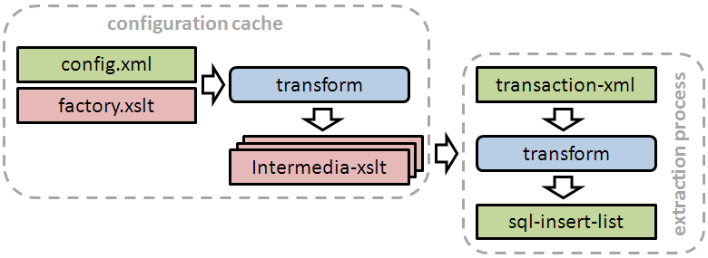
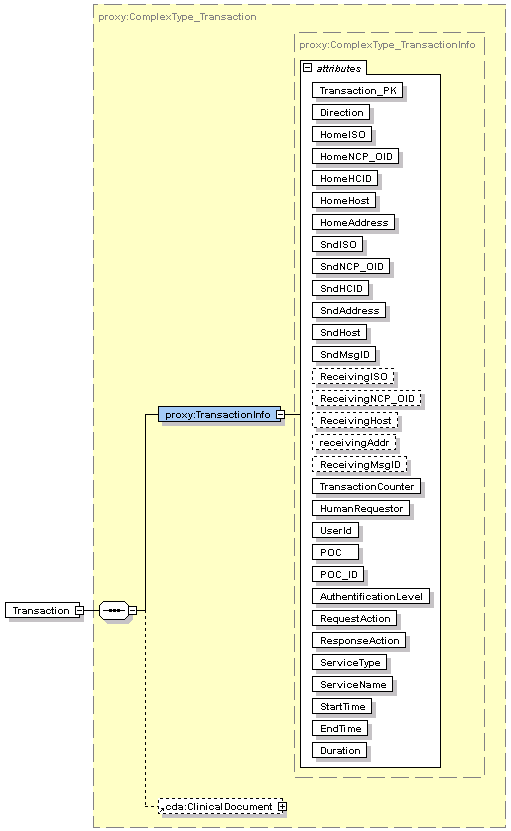
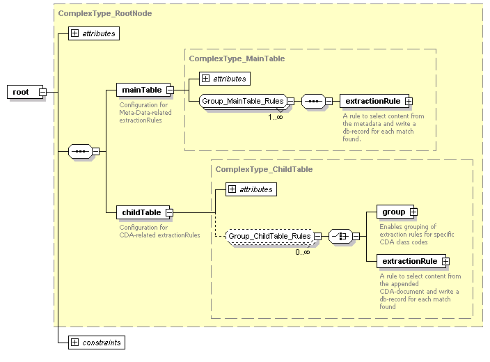
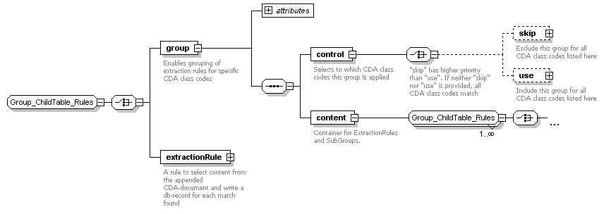

The Epsos Automatic Data Collector's main objective is to extract data from every transaction being processed by an NCP.
Rules can be defined in XML to extract data from a transaction's Metadata as well as from an appended CDA-document.
An SQL-database is used to store the extracted data.
To maximize throughput, the EADC generates and caches a customized extraction routine (XSLT) for every kind of CDA-Document
The behaviour of the XSLT generation process can be controlled by assigning extraction-rules to specific filter-groups.
Extraction Workflow
Overview

The workflow consists of two branches, which are described in detail as follows:
Extraction process
The spirit proxy feeds the EADC with a transaction-xml as specified in the section XML-Schema Diagrams.
If the transaction has an appended CDA-document, the class-code of that document is extracted, otherwise "null" is used as classcode.
An XML-stylesheet, that is customized for being used along with that class-code, is then retrieved from the configuration cache.
The retrieved XML-stylsheet is applied to the transaction-xml.
The resulting plaintext output is a list of SQL-insert-statements.
Those statements are then executed by using the JDBC-connector
Configuration cache
Extraction rules are specified in the file config.xml. (Every extraction rule can be configured for being applied to a specific subset of CDA-document-types.)
A stylesheet request from the extraction process always contains a specific CDA classcode.
The factory.xslt, the config.xml, and this classcode are used to generate an intermedia-xslt, which is then cached.
This cache can be cleared by reloading the proxy configuration
Preparations
Make sure to have an XML-Editor installed on your local computer, that has a content-assistant which is able to use XML-Schemas that are linked to XML-files. (e.g. Eclipse-IDE)
You will need to transfer files and directories between your computer and the target system
Prepare access to your target systems MySQL Database for executing SQL Scripts
You need to be able to execute bash commands at your target system
Installation
Determine which sql-datbase you want to use for this purpose.
Use the sql-script create_EADC.sql provided in EADC_resources/db to setup the required tables within this database.
Copy the directory EADC_resources to your jboss working directory .../jboss/bin
Configuration
Copy the directory EADC_resources from the target system to your workstation
Configure extraction rules by editing the file EADC_resources/config/config.xml with your XML-Editor
Use your XML-editors Content-Assistant at any XML-Node to provide Information on:
... what content is allowed within that XML-Node
... how this node affects the data extraction
Move your local copy of EADC_resources back to the target system
Configuration Example Procedure
Assume we want to configure the EADC to extract the patients gender from every CDA document being processed.
The following is a step-by-step procedure achieving that goal:
Determine the XML-Node within the CDA-Document, where the data is stored, which should be extracted.
Create an XPath expression leading to that Node. This expression is used to navigate within the transaction-xml: /proxy:Transaction/cda:ClinicalDocument/cda:recordTarget/cda:patientRole/cda:patient/cda:administrativeGenderCode
Open config.xml and navigate to the childTable node
Within that node insert the following extractionRule node:
The matchXPath attribute is targeting the administrativeGenderCode node.
This extraction rule is being processed for every match of this XPath within the transaction-xml.
Every mapping node specifies a customizable part of the resulting sql-insert statement.
The targetColumn attribute specifies into which sql-column the value should be stored.
The sourceXPath attribute specifies the content, that should be stored.
It must contain a valid XPath expression. This expression is evaluated within the context of the currently processed node, that was matched by matchXPath
CSV Export
Log in to the target system via ssh
Execute the following command (copy&paste):
The above command unloads the content of the tables etransaction and etransactiondata to the csv file /tmp/etransactiondata_`hostname`_`date +%Y%m%d%H%M%S`' i.e. /tmp/etransactiondata_ncp-at_20111102123839
XML Schema Diagrams
Input data structure
The following XML-Structure is used to feed the EADC.

Configuration root node

The maintable and childtable have a similar specification for extractionRule.
Every NCP-transaction is parsed by the MainTable-extractionRule and by the ChildTable-extractionRules.
The MainTable-extractionRule translates the parsed transaction-message into an SQL-query that inserts the data into the MainTable.
Every ChildTable-extractionRule generates an SQL-insert-statement for every match of any extractionRule. The extracted data is inserted into the ChildTable by those insert statements.
Group filter structure

At the child table one can build a tree structure of groups.